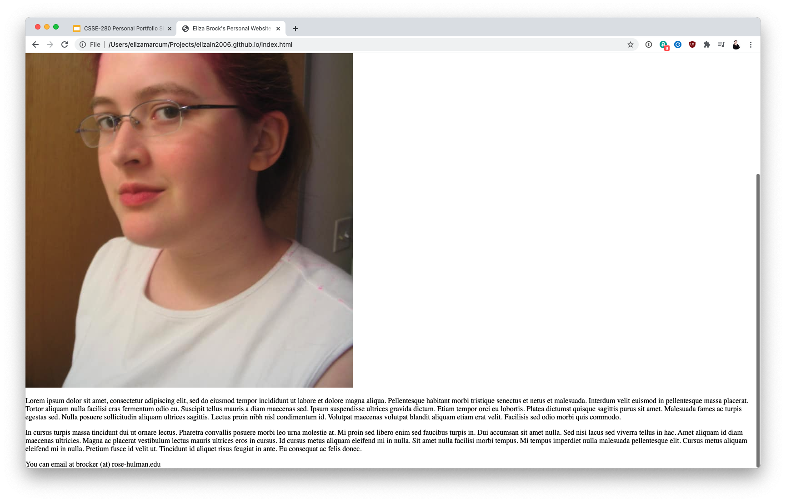
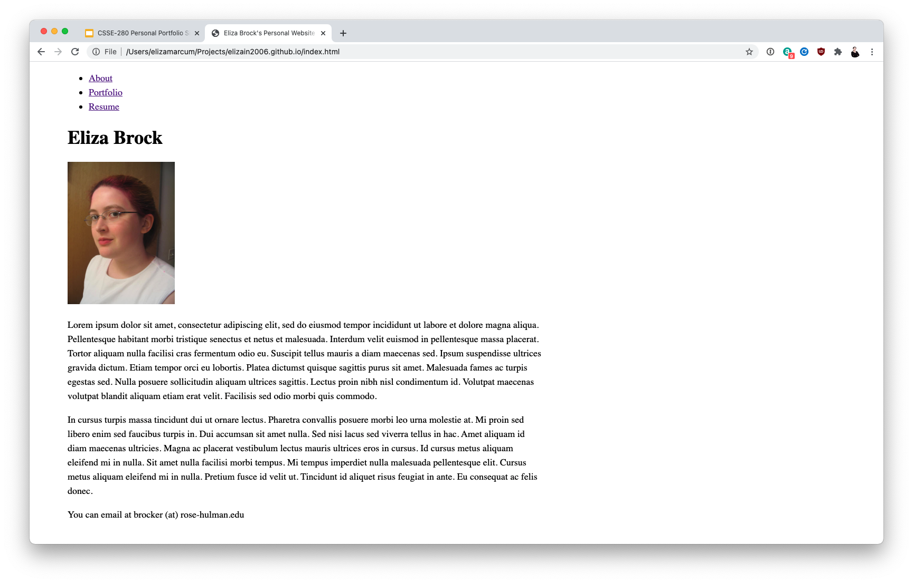
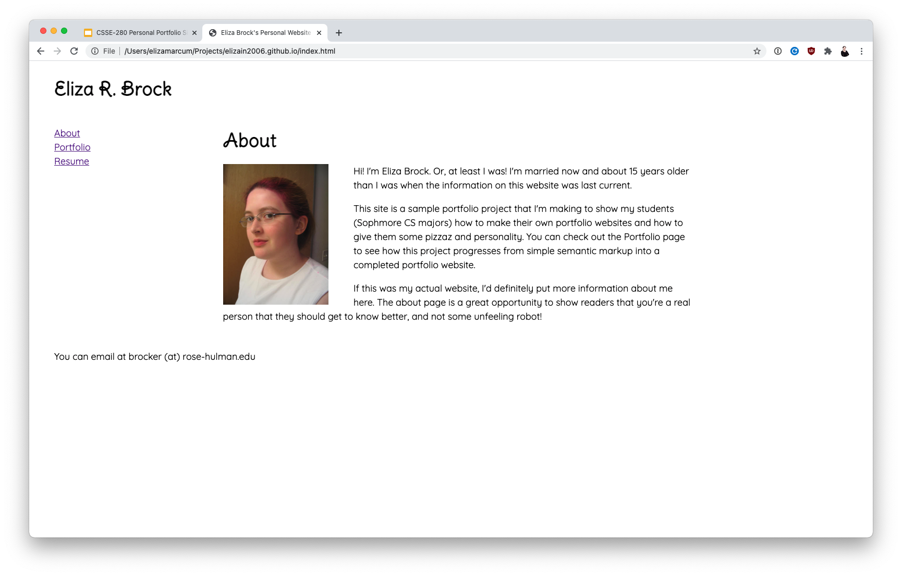
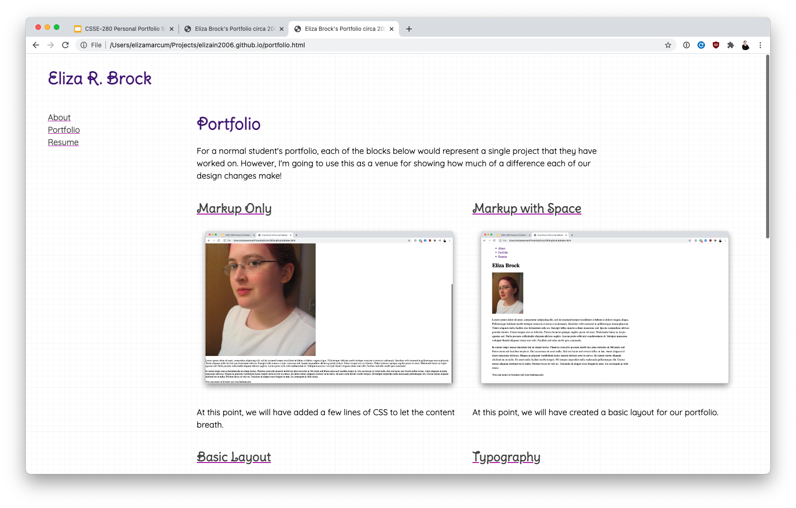
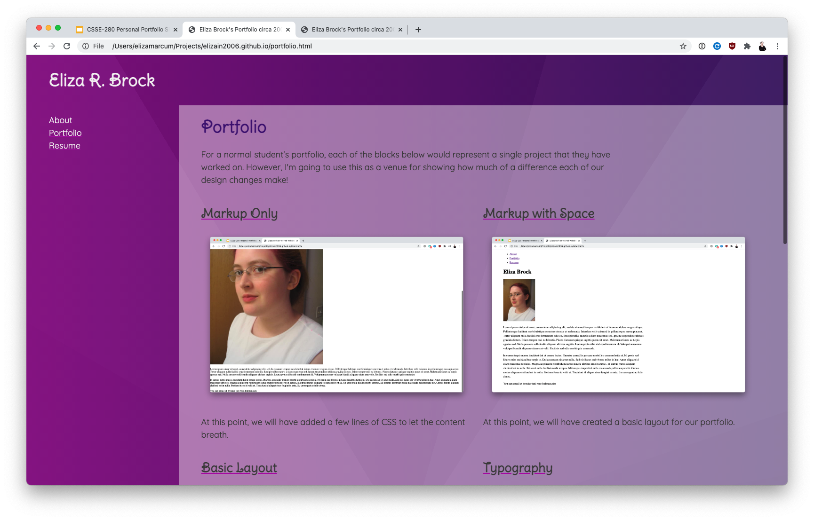
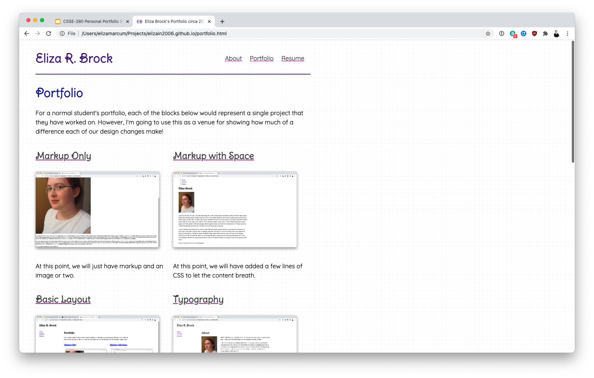

Portfolio
For a normal student's portfolio, each of the blocks below would represent a single project that they have worked on. However, I'm going to use this as a venue for showing how much of a difference each of our design changes make!
-
Markup Only
At this point, we will just have markup and an image or two.
-
Markup with Space
At this point, we will have added a few lines of CSS to let the content breath.
-
Basic Layout
At this point, we will have created a basic layout for our portfolio.
-
Typography
Adding some font choices at this point will really bring in some personality!
-
Images and Colors Option 1
At this point, we will add some color and images. Things will start to come together!
-
Images and Colors Option 2
At this point, we will pick a color scheme. Things will start to come together!
-
Letting It Rest
At this point, there are going to be plenty of issues with how this site looks and how garish the colorscheme is. We'll let it rest for a few hours and then pick it back up again to see how it looks after a rest!
-
JavaScript Interactivity
We'll wrap up the coding by adding a smattering of JavaScript interactions
-
Deploying to GitHub Pages
Finally, we'll deploy the final project to GitHub Pages!